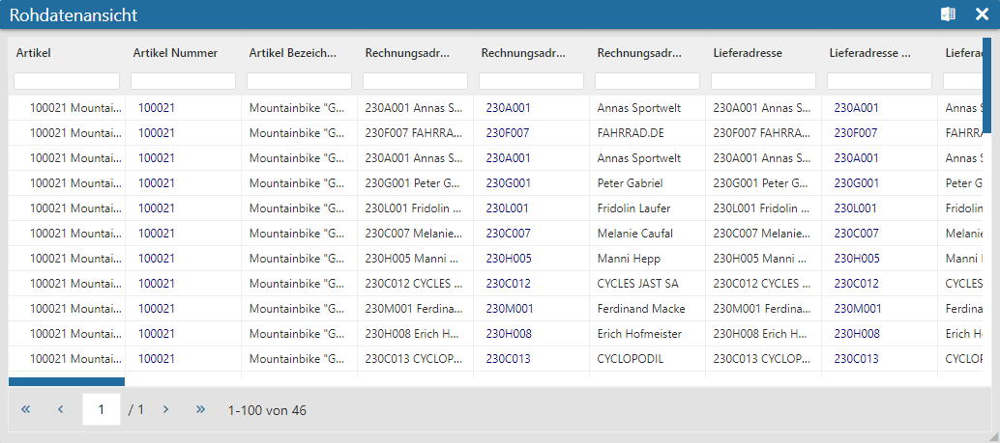

Durch Anwahl des Eintrags "Rohdatenansicht" aus dem Widget-Menü eines Olaps wird die Rohdatenansicht geöffnet. In dieser wird bei Mausklick die genaue Zusammensetzung eines Olap-Werts angezeigt.
Hinweis
Solange die Rohdatenansicht geöffnet ist, wird bei Mausklick auf eine Zahl des Olaps kein Quickfilter ausgelöst, sondern nur die Rohdatentabelle gefüllt.

In der Tabelle werden nach dem Mausklick auf eine Olap-Zahl die Einzelzeilen des gewählten Werts dargestellt. Innerhalb der Tabelle kann sortiert oder gesucht werden, wobei pro Seite 100 Datensätze angezeigt werden.
Buttons
Ø Ausgabe Excel
Durch Anwahl des Buttons "Ausgabe Excel" wird der Inhalt der Tabelle an Microsoft Excel übergeben.
Ø Ende
Durch Anwahl des Buttons "Ende" wird die Rohdatenansicht geschlossen.